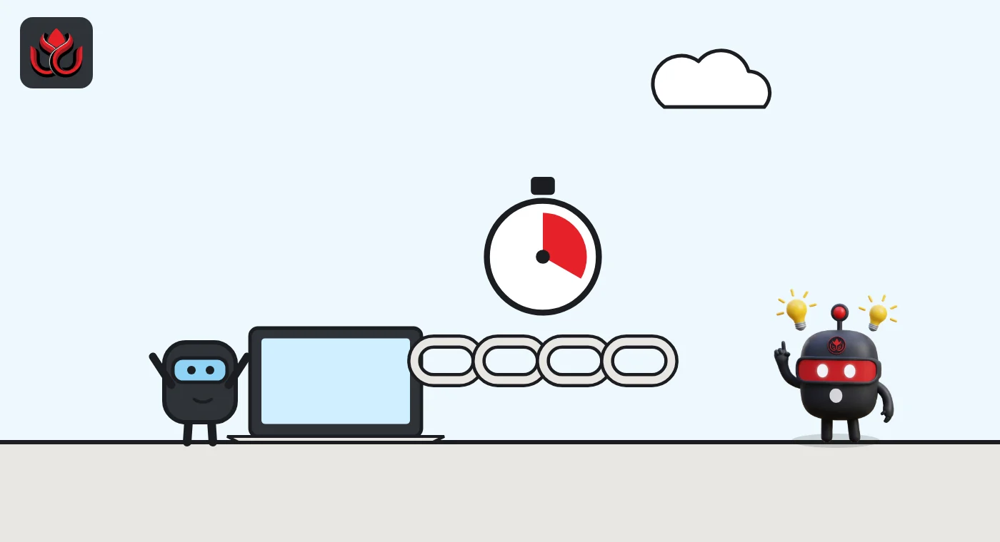
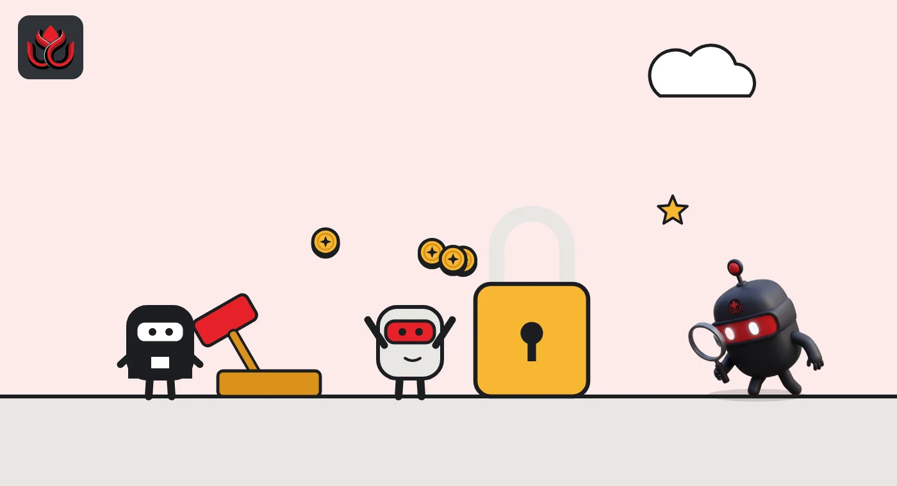

What is BNB Chain? Three chains, 21 block makers and 0.45-second blocks
BNB Chain is three blockchains that all run on BNB: BNB Smart Chain (BSC) for apps, the cheaper layer 2 opBNB and the storage network Greenfield. Its speed comes from a small club: just 21 validators make BSC's blocks at any one time.
Key points
- BNB Chain is three networks: BNB Smart Chain (BSC) for apps and DeFi, the layer 2 opBNB and the storage chain Greenfield. BNB pays gas on all three.
- BSC makes a block about every 0.45 seconds. The top 45 validators by stake are active, and 21 of them produce blocks in each epoch.
- Validators that double sign lose 200 BNB and are jailed for 30 days. Each must self-stake at least 2,000 BNB.
 What DeepSea's data shows
What DeepSea's data shows
DeepSea's data shows how closely BNB Chain is still tied to Binance. On November 2, its Binance page counted $33.64 billion of Binance's tracked holdings on BNB Chain, about 23% of the exchange's $144.40 billion total. BNB was also the token with the largest flows in both directions over the week: $368.29 million in and $254.31 million out.
Leveraged traders were cautious. DeepSea's BNB page showed $2.57 million of BNB shorts against $1.43 million of longs among tracked wallets, one of the few large assets where its smart traders leaned short.
Data: DeepSea (desea.io), checked November 2, 2026, 1:00 p.m. ET.
What is BNB Chain?
BNB Chain is the name for a group of blockchains linked to the BNB token, the coin that started as Binance's exchange token. The BNB Chain documentation lists three parts:
- BNB Smart Chain (BSC): the main network, a "high-performance blockchain platform" for apps, especially DeFi (decentralized finance).
- opBNB: "a layer-2 scaling solution for BNB Smart Chain" that the docs say makes transactions faster and cheaper.
- BNB Greenfield: a decentralized storage network for data, files and NFTs.
When most people say "BNB Chain" they mean BSC, where wallets, exchanges and DeFi apps live. If you want the token side of the story (burns, Binance perks and how BNB compares with OKX's OKB), LC Insight's guide to exchange tokens covers it.
How does BNB Smart Chain work?
BSC is compatible with the Ethereum Virtual Machine (EVM), the software that runs Ethereum smart contracts. That means the same wallets, tools and contract code mostly work on both. BNB Chain's BSC introduction says it "supports all the existing Ethereum tooling along with faster finality and cheaper transaction fees."
Speed is the main pitch. Per the same page, BSC produces a block about every 0.45 seconds on mainnet, down from 3 seconds after the Lorentz, Maxwell and Fermi hard forks. A hard fork is a rule change every node must adopt. A feature called Fast Finality, live since the Plato upgrade, usually finalizes the chain within two blocks, so a confirmed transaction cannot be reversed after roughly a second. If not enough validators vote, the chain falls back to slower, probabilistic finality.
BNB is the gas token: every transaction pays a fee in BNB. The docs say BNB "is not an inflationary token," so validators are paid from transaction fees rather than newly minted coins.
BSC keeps changing. Its next upgrade, Jenner, went live on testnet on October 28 and would reserve part of every block for payments, as LC Insight reported here.

Who are BNB Chain's validators?
Validators are the computers that produce blocks and check transactions. BSC uses a system it calls Proof of Staked Authority (PoSA), a mix of proof of stake and a small set of approved block producers that take turns.
According to the BSC validator overview:
- An election runs every day after midnight UTC (7:00 p.m. ET). The validators with the most BNB staked to them win.
- The top 45 are active: 21 "Cabinets" with the most stake and 24 "Candidates."
- In each epoch, 18 Cabinets and 3 Candidates form the 21-member set that actually makes blocks. Cabinets are picked more often.
- A validator must self-stake at least 2,000 BNB.
Regular holders take part as delegators. The staking docs say a holder can stake BNB with any active or standby validator and share its rewards. Each validator has its own credit token (named "st" plus the validator's name) that is created when you delegate and destroyed when you withdraw. Validators earn transaction fees and a commission they set on delegators' rewards.
What happens if a BSC validator misbehaves?
Validators lose part of their stake, a penalty called slashing, and can be "jailed," meaning removed from block production for a while. The validator docs list the rules:
- Double signing (signing two different blocks at the same height): 200 BNB slashed and 30 days in jail.
- A malicious Fast Finality vote: 200 BNB slashed and 30 days in jail.
- Downtime: missing more than 50 blocks in 24 hours costs that block reward; missing more than 150 costs 10 BNB and 2 days in jail.
Anyone who submits valid proof of double signing or a malicious vote earns 5 BNB, which gives outsiders a reason to watch.
BSC slashing penalties by offense
BNB slashed

What is opBNB?
opBNB is a layer 2, a separate network that processes transactions on its own and then records the results on BSC. The opBNB overview says it is built on the "bedrock version of Optimism OP Stack," the open-source framework from the Optimism project.
It is an optimistic rollup: transactions are assumed valid and posted to BSC, but anyone can challenge an invalid one with a fraud proof. LC Insight's layer 2 guide explains how rollups and proofs work.
BNB Chain announced opBNB with a testnet on June 19, 2023. Its official site now says mainnet is live and lists 100 million gas per second, "4K+" transactions per second and an average gas fee of $0.001. Those are BNB Chain's own figures.
What is BNB Greenfield?
Greenfield is BNB Chain's storage network. Think of it as a place to keep files whose ownership and permissions are recorded on a blockchain. Per the Greenfield validator docs, the chain is built on Cosmos and Tendermint software and uses proof of stake, with blocks every 2 seconds.
The data itself is kept by storage providers. The chain tracks balances and the metadata: who stores what, who may read it and who pays. Greenfield's validators relay messages between Greenfield and BSC, check that storage providers really hold the data and can slash those who do not.
BNB is used here too. The docs say BNB is locked on BSC and re-minted on Greenfield, so the same coin moves between the two chains.
What are the risks?
- A small validator set. Only 21 validators make blocks in each epoch, out of 45 active. That helps speed, but it means collusion or outages among a few operators matter more.
- Stake concentration. The daily election rewards the validators with the most BNB staked to them, so large holders and big platforms have more say over who produces blocks.
- Ties to one company. BNB began as Binance's token, and much of its use still runs through Binance products. Trouble at the exchange can hit the token.
- Frequent upgrades. Block times dropped from 3 seconds to 0.45 seconds through several hard forks. Each fork requires node operators to upgrade in time, and app builders to test against new rules.
- Layer 2 trust. opBNB depends on its fraud-proof system working as designed and on BSC staying healthy underneath.
LC Insight analysis
This section is our reading of the facts above, not a statement of fact.
- We think the 21-producer design is the one trade-off to understand. It is what makes 0.45-second blocks possible, and it is also why a handful of operators carry so much weight.
- opBNB and Greenfield matter less day to day than BSC. The real test for the family is whether upgrades such as Jenner's payment lane bring steady payment traffic to BSC itself.
- BNB still rides on Binance. On November 2, 2026, it traded about 49% below its CoinGecko all-time high, by our arithmetic, so a $91.7 billion market value has not meant a smooth ride.
What's next
- A mainnet date for the Jenner hard fork.
- Changes to the 45 active and 21 producing validators, or to the 2,000 BNB self-stake minimum.
- opBNB's published throughput and fee figures.
Frequently asked questions
Is BNB Chain the same as Binance?
No. BNB Chain is the blockchain network and Binance is a crypto exchange. BNB started as Binance's token and pays gas on BNB Chain's networks.
How many validators does BNB Smart Chain have?
The top 45 validators by stake are active: 21 Cabinets and 24 Candidates. Each epoch, 21 of them (18 Cabinets and 3 Candidates) produce blocks.
How fast is BSC?
BNB Chain's docs put the mainnet block time at 0.45 seconds, and Fast Finality usually finalizes the chain within two blocks.
Is BSC compatible with Ethereum?
Yes. BSC is EVM compatible, so Ethereum wallets, tools and contract code mostly work on it.
What is the price of BNB?
As of November 2, 2026, CoinGecko showed BNB at about $697.17, down 1.9% in 24 hours, with a market value of about $91.7 billion. Its all-time high on CoinGecko is $1,369.99.
Disclaimer. This article is based on public information and the sources listed below as of the update time shown. It is for information only and is not investment, legal or tax advice. Figures may change as companies and authorities publish new data.
Sources
- BNB Chain Documentation, home
- BNB Chain Documentation, BSC Introduction
- BNB Chain Documentation, BSC Validator Overview
- BNB Chain Documentation, BSC Staking Overview
- BNB Chain Documentation, opBNB Overview
- opBNB official site (checked November 2, 2026)
- BNB Chain Documentation, BNB Greenfield validator overview
- CoinGecko, BNB (November 2, 2026)